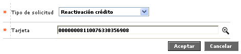
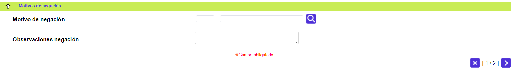
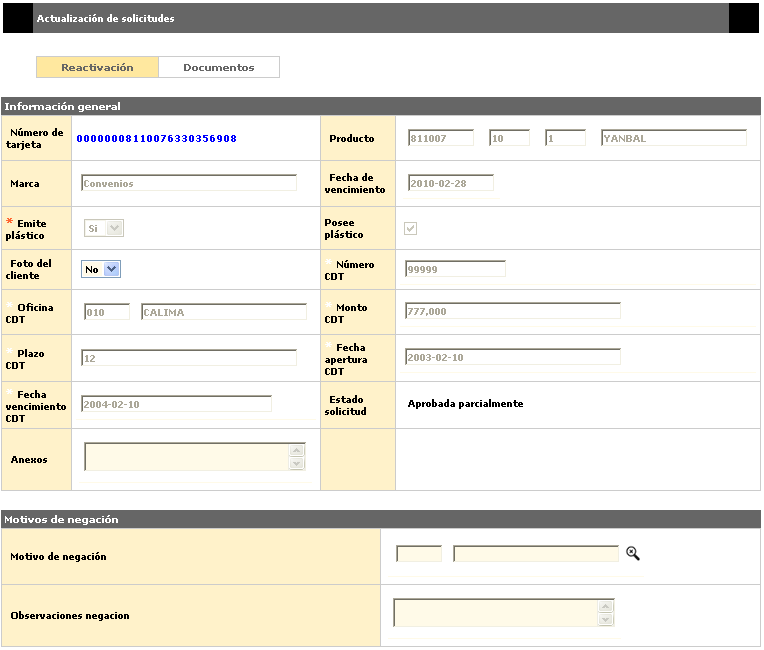
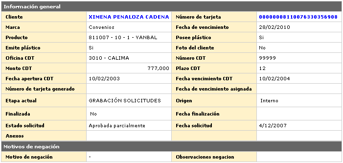

Reactivación crédito
Cuando se trata de una solicitud de Reactivación, que aplica sólo para productos crédito, se efectúa la activación de un plástico que por decisión del cliente ha sido cancelado voluntariamente y posteriormente éste desea adquirir nuevamente el producto. En los tres casos, el sistema toma en cuenta los parámetros definidos para cada evento por tipo de producto crédito, en los cuales se determinan los costos a cobrar al cliente por cada concepto.
Los campos Tarjeta nueva y Fecha vencimiento despliegan información una vez la solicitud ha surtido la etapa de Aprobación.
En el formulario de Ingreso de solicitudes se selecciona la opción Reactivación crédito y la tarjeta a la cual se le ingresará la solicitud.

Tarjeta |
Campo con lista de valores que contiene los diferentes números de tarjeta aprobadas al cliente, de la que debe seleccionarse aquella para la que se desea solicitar la Reactivación. |
Adicionar: una vez se han seleccionado los datos anteriores, se deplegará un wizard de dos pasos. El primero de ellos contiene los bloques Información general y Motivos de negación:

Cliente |
Campo de salida desde el cual se podrá invocar la consulta del cliente al cual se le está ingresando la solicitud. |
Número tarjeta |
Campo de salida desde el cual se podrá invocar la consulta de tarjeta del cliente al cual se le está ingresando la solicitud. |
Producto |
Estos campos se llenan automáticamente una vez ingresado el número de tarjeta asociado a la solicitud, permitiendo conocer el Segmento, Grupo de afinidad y Descripción que junto con el Bin conforman el producto crédito a reponer. |
Marca |
Campo de salida que ilustra la franquicia asociada al producto en la Definición del producto. |
Fecha Vencimiento |
Campo de salida en formato YYYY-MM-DD, que indica la fecha en que expirará el nuevo plástico de la tarjeta, cuando se ha parametrizado que el sistema deba calcular una nueva fecha de vencimiento. |
Posee plástico |
Este campo de acuerdo con lo parametrizado a nivel de producto, bien sea crédito, determina si se genera un plástico a modo de materialización del producto asociado a la tarjeta desde la cual se genera la solicitud. Si esta casilla aparece marcada (activa) permite interactuar con el campo Emite plástico. |
Emite plástico |
En este campo con lista de valores adjunta se debe seleccionar entre Si se emite plástico o No, dependiendo del tipo de solicitud. El poder interactuar con este campo depende del valor que tenga el campo Posee plástico. |
Foto del cliente |
Campo que posee lista de valores adjunta en la que es posible indicar Si o No el nuevo plástico incluirá la foto del cliente, de acuerdo con lo parametrizado para cada producto en particular. |
| Número CDT | En este campo, en caso de aplicar, se indica el número que identifica el C.D.T. que garantiza la obligación. |
Oficina CDT |
En este campo se selecciona de la lista de valores la sucursal en la que se efectuó la apertura del C.D.T. para garantizar la obligación, siempre y cuando aplique para el producto en particular. |
Monto CDT |
Campo, que si aplica, debe contener el valor inicial del C.D.T. que garantiza la obligación. |
Plazo CDT |
Campo que en caso de aplicar, debe contener el plazo inicial del C.D.T. que garantiza la obligación. |
Fecha apertura CDT |
En este campo, en caso de aplicar, se registra la fecha en que se constituye el C.D.T. que garantiza la obligación. |
| Fecha vencimiento CDT | Campo, que en caso de aplicar, debe contener la fecha en que expira el C.D.T. que garantiza la obligación. |
Estado solicitd |
Este campo ilustra la condición en que se encuentra la solicitud en cada momento, y que puede ser En zona gris, Negada totalmente, Negada parcialmente, Aprobada totalmente o Aprobada parcialmente. |
| Anexos | Campo que permite ingresar información relacionada con la solicitud, referente a documentos suministrados por el cliente u otros datos. |

Motivo negación |
Si aplica, contiene el código y la descripción de la causal de negación de la solicitud. |
| Observaciones negación | Campo que puede contener notas que ilustren las razones por las cuales fue denegada la solicitud. |
A través de los botones de la parte inferior derecha, se podrá cancelar el proceso o ir al segundo paso del wizard: Documentos.
Actualizar: Si en formulario del ingreso de solicitudes el usuario invoca la opción Actualizar, se despliega el siguiente formulario.

Detalle: De igual forma, si en formulario del ingreso de solicitudes el usuario invoca la opción Detalle, se despliega el siguiente formulario.
